Before you start
Have you used an AI tool before?
Your task. Tap the answer that fits you, or type your own.
There is no wrong answer.
Meet the tools
You can try these three AI tools.
You type what you want. The tool writes an answer for you.
Your task. Look at the three tools. Then tap how you would get one.
 ChatGPTby OpenAI
ChatGPTby OpenAI Claudeby Anthropic
Claudeby Anthropic- 1

Open your browser - 2

Search the tool’s name - 3Sign in or make a free account
- 1Open the Play Store
- 2

Search the name, tap Install - 3Open the app and sign in
Use only your school-approved tool and account.
Your first prompt
Try the prompt in your AI tool.
- Open your AI tool.
- Type or paste this exact prompt.
- Copy the answer it gives you.
- Paste the answer in the box on the right.
write a four-line reminder for tomorrow's workshop practical, ask everyone to bring their record book
Use your school-approved tool.
Look closely
It sounds good. Can you trust it?
Your task. Read the answer you pasted. Then tap every statement that is true.
The answer you pasted
One important rule
You have an answer. What do you do now?
An AI answer is a draft, not a promise. You check it, and then you decide.
Your task. Put the four steps in the right order.
- You give the AI tool an instruction.
- The AI tool writes a draft.
- You check the draft.
- You use it, or you change it.
The AI gives the draft. You give the check.
Why it can get things wrong
An AI tool guesses the most likely next words.
It learned patterns from a lot of text. It picks the words that usually come next.
Your task. The tool must guess the time. Tap the one you think it will pick.
“The buses leave the ITI gate at ? ”
Not the same as other tools
An AI tool is not a search engine or a calculator.
Some AI tools can also search the web. You still check the answer.
Your task. Read the task on the right. Tap the tool that does it.
Task 1 of 3
Tap the tool that fits the task.
Where it helps, where to be careful
Know when you can rely on an AI tool.
Your task. Tap a task, then tap the box where it belongs.
Useful for
Check carefully
Tap a task to begin.
Your turn
Find the problems in this notice.
An AI wrote this notice from a short prompt.
- Read the notice.
- Tap the parts you would check before using it.
- Press Check my choices.
Your prompt
write a five-line noticeboard announcement for a plant visit for final-year trainees, buses leave from the ITI gate at 8 am next Friday
The AI’s notice. Tap the parts you would check
NOTICE
Tap any part of the notice to mark it.
Before you use it
Run the five checks on every AI answer.
Every AI answer needs these checks before it becomes your work.
Your task. Think of the notice you just saw. Tick each check as you do it.
0 of 5 checked
Keep this rule
An AI answer is a draft until you check it.
Use AI for the draft. Always check it yourself.
Generates likely text
Good for drafting, reshaping, explaining
You check facts, local details, big decisions
Approved tool. No private data